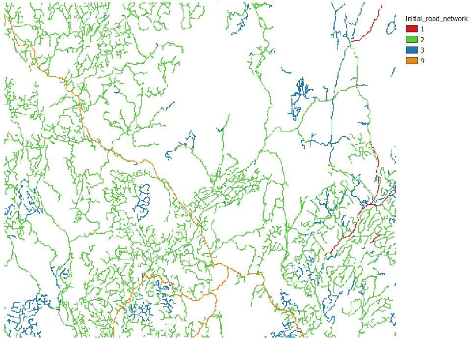
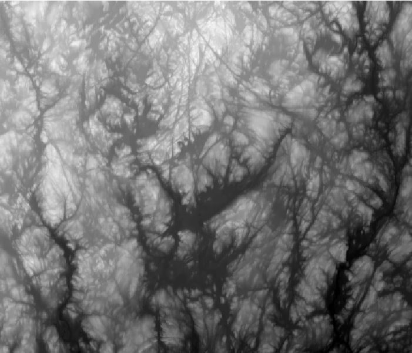
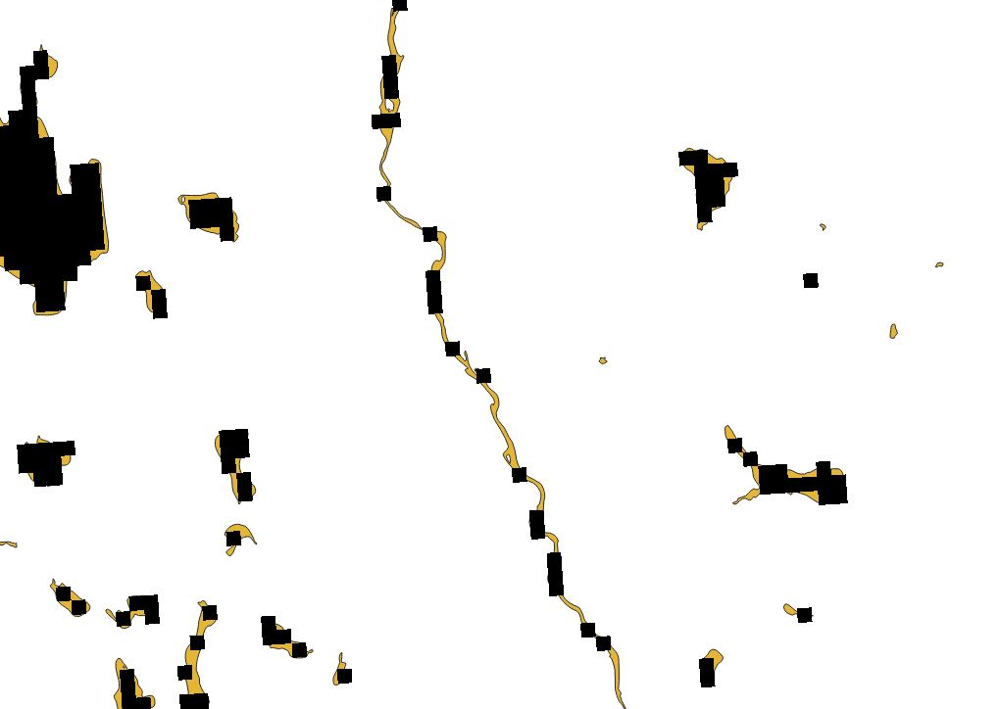
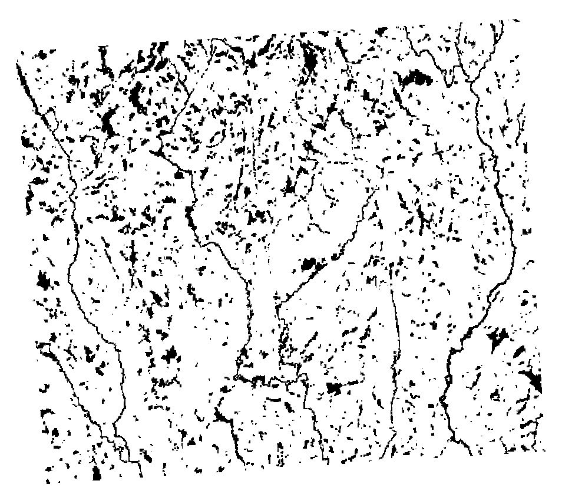

Parameterization
In this section, we will learn to parameterize the FRS module properly, in order to use it in a simple LANDIS-II simulation.
As you will see, this will require some skills in GIS software, in order to generates the raster maps needed by the module.
To that end, we will fill a parameter file for the FRS module as an exercice, doing it step by step.
Ressources needed
In order to follow the exercise of this section, it is important that you have the following software installed on your computer :
- LANDIS-II v. 7
- QGIS 3.X
- R or R studio
- Package
gtools - Package
dplyr - Package
rgdal - Package
raster - Package
landscapemetrics
- Package
💡 To install all of these R packages at once, use the command
install.packages(c("gtools", "dplyr", "rgdal", "raster", "landscapemetrics"))in R.
In addition, you need to download the data necessary for the exercices: 💾 Click here !
Looking at the FRS module parameter file
Go into the folder that you’ve downloaded, containing the files necessary for the exercice of the workshop. Then, go into the subfolder shared-parameters, and then disturbances.
In this folder, you’ll find two files : one is the parameter file that we will fill throughout this exercice (roads.txt), and the second being the correction (roads_correction.txt).
Open roads.txt and look at its contents. As you can see, the outline of the parameter file is already written. Some parameters are also already filled so that you can focus on the important ones.
>> To be read properly, the parameter file must contain the parameters in this order.
>>------------------------------------------------------------------------
>> BASIC PARAMETERS
LandisData "Forest Roads Simulation"
Timestep
HeuristicForNetworkConstruction
SkiddingDistance
LoopingBehavior No
OutputsOfRoadNetworkMaps ./output/disturbances/roads/roadNetwork.tif
OutputsOfRoadLog ./output/disturbances/roads/
>>------------------------------------------------------------------------
>> INPUT RASTERS AND COST PARAMETERS
>> Only the initial road network raster and the distance cost are
>> essential. If you do not want to use one of the cost for the path-
>> -finding, just indicate “none” as the parameter value for the raster
>> location, and “0” for the value of the associated cost.
>> These parameters are essential for the module to function
RasterOfBuildableZones
InitialRoadNetworkMap
DistanceCost
CoarseElevationRaster
CoarseElevationCosts
>> Lower elevation Upper elevation Additional
>> threshold threshold value
>> These parameters are optional, but can improve predictions
FineElevationRaster None
CoarseWaterRaster
CoarseWaterCost
FineWaterRaster None
SoilsRaster None
>>------------------------------------------------------------------------
>> ROAD TYPE THRESHOLDS AND MULTIPLICATION VALUES
>> These parameters are all essential to the functioning of the
>> extension.
SimulationOfRoadAging Yes
SimulationOfWoodFlux Yes
RoadTypes
>> Lower Wood Flux Upper Wood Flux Road type Multiplicative Maximum age Road Type
>> threshold threshold ID Cost Value Before destruction Name
RoadTypesForExitingWood
>> Road type Road Type
>> ID Name
8 Sawmill
9 MainRoadNetworkPavedLet’s look at the parameters that are already set:
LandisDatais simply a parameter indicating to LANDIS-II that this parameter file is related to the FRS module.- The
LoopingBehaviorparameter enables or disables the creation of loops in the network. In this exercice, we will keep it disabled. If you want to know more about how the looping algorithm functions and how to parameterize it, we refer you to the article presenting the module (Hardy et al. 2021), as well as the user guide. OutputsOfRoadNetworkMapsandOutputsOfRoadLogindicate where the output rasters and log of the module will be saved, relative to the location of the LANDIS-II scenario file.FineElevationRaster,FineWaterRasterandSoilsRasterare parameters indicating the location of the raster maps of topographic obstacles, streams and type of soils are located respectively. We will not use those in this exercice; therefore, they are all set tonone. This is possible as the FRS module only requires theRasterOfBuildableZones,InitialRoadNetworkMap,DistanceCost,CoarseElevationRasterandCoarseElevationCostscost parameters to function. The rest are optional.SimulationOfRoadAgingandSimulationOfWoodFluxenable the simulation of road aging and wood fluxes respectively.RoadTypesForExitingWoodis a table of parameters indicating the road type ID of the different exit points that can be found in our road landscape. Remember that exit points are places where the harvested wood can be delivered to. Here, two type of exit points are defined : sawmills and the main, paved road network. Since they have the ID8and9, that means that every pixel in the initial road network map with the value8or9will be read by the FRS module as exit points. Also remember that every road landscape must initially contain exit points, and that their location do not change throughout the simulation.
Now, let’s fill the remaining parameters one by one. You can directly write fill out the parameters in the road.txt file and save it as you go.
Exercice : filling the rest of the parameter file
1. The time step
The time step of the FRS module should always be the same as the time step of the harvest extension that is chosen. This way, the FRS module always activates right after the harvest module have defined newly harvested areas, so that forest roads are constructed at the same timestep as the harvesting.
As the base harvest extension is parametrized with a time step of 10 years, this time step will be the same for the FRS module.
2. The heuristic
The FRS module proposes 3 different heuristics for the user : Closestfirst, Farthestfirst, and Random.
Different heuristics will result in different forest road networks. From our experience as developers of the FRS module, using a different heuristic might affect some values (like specific fragmentation indices), but affect others much less or in an insignificant way (like the road density in the landscape). Tests made during the development of the module on existing cuts have revealed that the Closestfirst heuristic was best at predicting the location of real forest roads. We hypothesize that this is because forest roads are often constructed to nearest targets/harvested areas first by road engineers or forestry compagnies.
We therefore recommend the Closestfirst heuristics, and will use it here.
3. The skidding distance
The skidding distance is very important parameter that will heavily influence the road density of the simulated landscape. Indeed, as long as a road pixel is present near a recently harvested cell, no roads will be created to this cell: it will be considered that the wood is simply skidded toward the nearby road. Therefore, as the skidding distance parameter gets smaller, more road pixels will be created to cover the recently harvested areas.
Skidding possibilities can depend on the region of interest, the topography, and the methods or technologies available. Currently, the FRS module uses a constant skidding distance for all of the landscape, and all of the simulation. Therefore, you should get informed as to what skidding methods are used in your landscape of interest. Your skidding distance can also serve to avoid taking into account skidding trails that are not large or permanent enough to be considered roads.
For this exercice, we will use a skidding distance of 200m, which roughly corresponds to the maximum skidding distance observed in Quebec, where our simulated landscape is (Roa Cea 2011).
4. The raster of buildable areas
Legislation in place can prevent forest roads from being built in certains areas. This needs to be taken into account, so that the FRS module can avoid these areas.
The raster of buildable areas is a simple raster map that must have, like any raster map used by the FRS module, the same projection, extent and resolution as the other raster maps used by the LANDIS-II simulation. It contains 0 for pixels where roads cannot be built; and 1 for pixels where they can.
In the case of this exercice, we will allow roads to be created everywhere in the landscape. Therefore, our raster of buildable areas will be filled with 1.
To create such a raster, open QGIS, and follow the instructions :
- Add the
initial-communities.tifraster used in our simulation into QGIS. It is found in theshared-rastersfolder that you download earlier. - Go into the
Rastertab, and selectRaster calculator. - In the
Raster calculatortool, select the initial communities raster, and click the buttonSelected Layer Extent. - In the field at the bottom of the
Raster calculator, just put the number1. - In the
Output layerfield at the top right of the Raster Calculator, inputBuildable_zones_tempor any other name. - Click on the
Okbutton. The resulting raster should be filled with values of1. - To finish preparing the raster for LANDIS-II, go again into the
Rastertab, and selectConversion, and then theTranslatetool. - In the
Translatetool, select the raster you just created. - In the field
Output data typeof theTranslatetool (near the bottom), chooseint16, and clickRun. - Save the resulting raster (named
Converted) by right clicking on it in the layers menu on the left of the screen, and selectingExportandSave as. - When you save the raster, be sure to save it with the same CRS than the initial communities raster (by default, it should be the same).
- Save the raster with the name
buildable_zones.tifinto theshared-rastersfolder. - Don’t close QGIS yet. We will need it for other operations !
Now, you should be able to write the path to the buildable_zones.tif raster into the roads.txt file.
The path should look like this in roads.txt:
Click for Answer
RasterOfBuildableZones "../shared-rasters/buildable_zones.tif"
5. The initial road network map
The initial road network map describes the state of the road landscape at the beginning of the simulation.
A pixel with a value of 0 implies that no road exist in the pixel. All other values to be used in this raster must correspond to a road type ID or an exit point ID described in the parameter file of the module.
The user can define as many road type IDs or exit point IDs as they want, so as to adapt to the road types or classification that might exist in the landscape.
Here, we will use a shapefile that contains the roads that exist in our landscape. The shapefile is in the folder spatial-data, and is named road_network.shp.
Start by adding road_network.shp in the layers of QGIS. Then, right click on the resulting layer in the layer menu, and choose the option Open attribute table. This table shows the attributes associated with every line in the shapefile. You will see that it has a road_type attribute, with three different possible values : Primary, Secondary and Tertiary. We will have to transform this value into single numbers, that we will use as road type IDs, and then “burn” them into a raster map.
During our exercices, we will use the following classification, and the following road type IDs:
| Road type attribute (in the shapefile) | Road type ID (for the FRS module) |
|---|---|
| Primary | 1 |
| Secondary | 2 |
| Tertiary | 3 |
To create the new attribute table containing the road type IDs for each line of the road layer, follow these instructions in QGIS:
- While in the window of the attribute table, click on the small pencil icon on the top left of the window to put the layer into edition mode.
- Click on the
Open field calculatorbutton on the top of the window (the one representing an abacus), or pressCTRL + iwhile in the window of the attribute table. - Name the new field
TYPE_ID, and choose the field typeWhile number (integer), with anoutput field lengthof 2. - In the
Expressionfield, type or paste the following expression :
if( "ROAD_TYPE" = 'PRIMARY', 1, if( "ROAD_TYPE" = 'SECONDARY', 2, if( "ROAD_TYPE" = 'MAIN_PAVED' , 9, 3)))
- If you are not used to such expressions to calculate attributes values of shapefiles, take the time to read the expression. Notice that it is made of three
ifstatements, one in the other. The firstifstates that if theROAD_TYPEfield for a particular line is equal to the valuePRIMARY, we want this newROAD_TYPEfield to have the value1. If not, we make a second test : if the value isSECONDARY, we want the value2. If not, we make a third test : if the value isMAIN_PAVED, it’s an exit point; and so, we want the value9(as it will be an exit point of the “Main paved road network” category). If not, the value will have to beTERTIARY, and so we want the value3in return. - Click the
Okbutton of the field calculator window. - Once that you are back in the attribute table window, click again on the pencil icon to finish the edition, saving the changes in the process.
Now, we can “burn” the TYPE_ID attribute associated to each line into raster cells. To that end, follow the instructions:
- Go into the
Rastertab, thenConversion, then choose theRasterize (Vector to raster). - As an input layer, choose the
road_networklayer that you just edited. - In
Field to use for a burn-in value, selectTYPE_ID. - Do not choose a fixed value to burn in the raster.
- Now, we have to give information about the resolution and extent of the resulting raster. In
Output raster size units, chooseGeoreferenced units. InHorizontal resolutionandVertical resolution, input100(as the cells of the raster we use are 100m x 100m). - In
Output extent, click on the...button on the right, and chooseCalculate from layer. Choose theinitial-communitieslayer. - Down in the window, change the
Output data typetoint16. - Click
Run. - Save the resulting raster in the folder shared-raster with the name
initial_road_network.tif
The resulting raster should look like this:
Click for Answer

Now that the raster is done, you should be able to write the path to the initial_road_network.tif into the roads.txt file.
The path should look like this in roads.txt:
Click for Answer
InitialRoadNetworkMap "../shared-rasters/initial_road_network.tif"
6. The basal distance cost, and the coarse elevation cost
Parameters related to the construction cost of forest roads have an important effect on their paths, as they will be least-cost paths chosen by the pathfinding algorithm.
These costs can be difficult to gather, as they are dependent on a high variety of factors, and are not very studied. However, a good estimation of such costs can be obtained by directly asking experts, or by gathering cost data from government agencies or forestry industries.
Here, we will derive the two cost parameters that are essential for the FRS module to function from a dataset of construction costs of forest roads. We will do so by using a statistical model (linear regression) applied onto the data.
To start, open the file road_costs_data.csv located in the exercices-prepare-parameters folder. Observe the structure of the data. We have the response variable cost, and two explanatory variables, slope and road_type. cost is simply the cost of construction of 100m of a road on slope with the grading described by slope, and of the road type described by road_type.
From this dataset, we want to obtain two different parameters :
- The basal distance cost is the cost of construction of a road in the best possible conditions. It is, in essence, the irreducible cost of constructing a road on the distance of a cell. Therefore, the basal distance cost can correspond to the intercept of a linear regression that we will apply on the dataset.
- The additional cost due to the elevation (or “coarse elevation cost”) corresponds to the added cost of construction a forest road on a given slope, when compared to the basal distance cost. It can correspond the effet of the slope as a factor in a linear regression, when applied on a dataset similar to ours.
💡 The term “Coarse elevation” in the name of the parameters refers to the slope; while the term “Fine elevation” refers to topographic obstacles such as cliffs or breaks. See the the user guide for more information.
We will compute these costs only for a reference road type that we will choose. This is because the FRS module uses multiplicative values (relative to the reference road type) to determine the construction cost of different road types. You will learn more about these multiplicative cost values in a later section. Here, we will choose the lowest road type - Tertiary, for small forest roads with low traffic - as a reference. In effect, this means that we will apply a linear regression only for the lines of our data table that corresponds to the road type Tertiary. This also mean that we will not indicate the effect of the factor road_type in our linear regression.
To obtain these parameters, open the file correction_script_to_get_parameters.R with R studio. You can also open it with R if you prefer; but you might have to adapt one or two commands. Run the script line by line up to section 9 of the script, reading the commentaries present in the script as you go. if you are not familiar with R code, you can take the time to understand in detail what the different commands correspond to. Don’t close R studio when you are done. We will still need it later !
When you are done, write the value of the basal distance cost and the additional costs due to the elevation into the roads.txt file. Remember that the additional elevation cost for a slope of 0 to 9% is going to be 0, as this is the level of reference. For slope degrees superior to 41%, input a punitive value in order to prevent the FRS module from building roads onto such a slope.
In the end, the parameters should look like this in roads.txt:
Click for Answer
DistanceCost 894.1
CoarseElevationCosts
>> Lower elevation Upper elevation Additional
>> threshold threshold value
0 9 0
9 16 127.9
16 41 511.5
41 10000 100000007. The elevation raster
The elevation raster is pretty straight-forward to understand. It is a raster map where each pixel equals the mean elevation value for the terrain in the pixel. From this map, the FRS module will compute a mean slope value between one pixel and its neighbors.
The elevation raster can be derived from a Digital Elevation Model. Here, we will use data from the Canadian Digital Elevation Model. You can find the two raster tiles of the DEM that overlap with our study area in the spatial-data folder. They are named cdem_dem_031P.tif and cdem_dem_032A.tif.
Then, follow these instructions in QGIS to create the elevation map for our simulations :
- Unzip, then add the two raster tiles that you download as layers in QGIS.
- [Optional] If you still have the initial road network opened as a layer in QGIS, look at its superposition with the elevation rasters that you added. Do you notice anything ?
Click for Answer
You can see that many of the roads in our landscape follow the elevation of the land. In particular, you can see that existing roads are often parallel to riverbeds.
- Go into the
Rastertab, thenMiscellaneous, and choose the toolMerge. - In the
Input layersfield of theMergetool, click the...button on the right and select the two elevation rasters. - Click
Run. - Go into the
Rastertab, thenProjections, and choose the toolWarp. - As
Input layer, choose theMergedraster that you just created. InTarget CRS, chooseEPSG:32198 - NAD83 / Quebec Lambert. InOutput file resolution in target georeferenced units, choose100. AsOutput data type, chooseInt32. - Click
Run. - Go into the
Rastertab, thenExtraction, and choose the toolClip raster by extent. - In
Input layer, choose the raster you created with theWarptool (normally namedReprojected). InClipping extent, use the...button on the right; then selectCalculate from layer, and then choose the initial communities layer (or a raster that we created previously). - Click
Run. - Save the resulting raster in the
shared-rastersfolder, with the namecoarse_elevation.tif.
The resulting raster should look like this :
Click for Answer

Now that the raster is done, you should be able to write the path to the coarse_elevation.tif into the roads.txt file.
The path should look like this in roads.txt :
Click for Answer
CoarseElevationRaster "../shared-rasters/coarse_elevation.tif"
8. The coarse water raster
The coarse water raster is one of the optional rasters. Still, we will take it into account, as rivers and lakes are numerous in our landscape and will heavily influence the location of roads. The coarse water raster is really simple, as it contains either 0 for the absence of water, and numbers superior to 0 for the presence of water.
💡 The term “Coarse water” in the name of the parameters refers to what is often called “surface hydrology” in GIS langage, meaning lakes and rivers represent by polygons in vectorial data. Meanwhile, the term “Fine water” refers to what is called “linear hydrology” in GIS data, meaning streams whos width is not known or very small, and who are represented in vectorial data by lines rather than by polygons. See the the user guide for more information.
The coarse water raster can easily be derived from hydrological data. Here, we will use data from the 5th provincial forest inventory of Québec.
To create the coarse water raster, follow these instructions in QGIS :
- Add the file
lakes_rivers.shpin the folder spatial-data as a layer in QGIS. - Go into the
Rastertab, thenConversion, and choose the toolRasterize (Vector to raster). - As
Input layer, choose thelakes_riverslayer. Don’t choose aField to use for a burn-in value. InA fixed value to burn, input1. InOutput raster size units, chooseGeoreferenced units. InHorizontal resolutionandVertical resolution, input100. InOutput Extent, click on the...button on the right, and chooseCalculate from layer, then select the initial communities raster (or any raster that we have created before). InOutput data type, chooseInt16. - Click
Run. - Look at the resulting raster. Do you notice anything important ?
Click for Answer

- Re-open the
Rasterizetool, and fill it with the same instructions as before. However, in theAdditional command-line parametersfield, write-at.
💡 The
-atadditional parameter that we use here is a parameter for the GDAL engine that is used in theRasterizetool, and means ALL_TOUCH. With this parameter, every cell touching a polygone of surface water is going to be considered as containing water.
- Click
Run. - Save the resulting raster in the
shared-rastersfolder, with the namecoarse_water.tif.
The resulting raster should look like this :
Click for Answer

Now that the raster is done, you should be able to write the path to the coarse_water.tif into the roads.txt file.
The path should look like this in roads.txt:
Click for Answer
CoarseWaterRaster "../shared-rasters/coarse_hydrology.tif"
9. The coarse water cost
The coarse water cost represent the cost of building a road across a cell containing body of water (larger than a stream). In essence, this cost is supposed to be the cost of building a bridge section on the distance of a cell.
This cost can be estimated by looking at the cost of construction of existing bridges. However, asking for expert opinion can be a quicker option. It is also possible to input what is called a “punitive” value, meaning a value that is chosen arbitrarily to prevent the pathfinding algorithm to go through rivers and lakes as much as possible. Be warned that choosing a punitive value that is unrealistic will result in skewed estimations of construction costs during the simulation, as long as the module is forced to cross rivers at some point. It might also result in un-realistic long detours to avoid a small crossing.
Here, we will use a number that has been given to us by experts at the Ministère des Forêts, de la Faune et des Parcs (MFFP) du Québec. This cost will be of 300000.
10. The road types
As we have said earlier, the user can define different road types in the landscape, with associated with different level of traffic of wood trucks, different lifespans (before being destroyed by wearing), and different costs of construction.
Here, we will use the three road types present in the database of cost that we saw in exercice : Primary, Secondary and Tertiary. You can start inputting them in roads.txt.
The section describing the road types in roads.txt should look like this:
Click for Answer
RoadTypes
>> Lower Wood Flux Upper Wood Flux Road type Multiplicative Maximum age Road Type
>> threshold threshold ID Cost Value Before destruction Name
3 Tertiary
2 Secondary
1 Primary11. The flux thresholds for each road type
The flux thresholds of each road type correspond to limits of wood trucks traffic on a forest road, for the length of a time step. Above these limits, a forest road will have to be upgraded to a higher-grade (larger) type to support the higher traffic. They are used when the wood fluxes are enabled in the simulation.
To facilitate the input, these thresholds directly refer to the transport of quantities of wood, without taking into account the wood that can be transported by a single truck. Currently, the wood transported is expressed in units of age cohorts harvested in a cell. This is so that the FRS module can be used with any harvest extension (Base Harvest or Biomass Harvest).
These parameters can be estimated in different ways. Empirically, they can be chosen so that, on average and for a “business as usual” scenario, the proportion of the different types of road in the simulated landscape remains the same as the proportion of the initial, existing road network. They can also be decided arbitrarily.
We will use use flux thresholds that we determined empirically, and that are of 0-70 for Tertiary roads; 70-40000 for Secondary roads; and 40000-100000 for Primary roads. You can input these in roads.txt.
The section describing the road types in roads.txt should look like this:
Click for Answer
RoadTypes
>> Lower Wood Flux Upper Wood Flux Road type Multiplicative Maximum age Road Type
>> threshold threshold ID Cost Value Before destruction Name
0 70 3 Tertiary
70 40000 2 Secondary
40000 100000 1 Primary12. The multiplicative cost values for each road type
The multiplicative cost values serves to compute the cost of a given road type, related to a road type of reference. In our case, our road type of reference is the smallest, cheapest type: Tertiary. Since it is the road type of reference, its multiplicative cost value will be of 1. This is because the cost that is calculated by the pathfinding algorithm (using the cost parameters we calculated before) is the cost of construction for the reference road type. Therefore, the multiplicative cost value of 1 assures that the cost of construction for a Tertiary road will be the same as the one computed by the pathfinding algorithm.
Meanwhile, as the Secondary and Primary road types are larger and more expensive to construct than Tertiary roads, their multiplicative values will be superior to 1. On the contrary, if we had a road type smaller than the reference type, its multiplicative cost value would be inferior to 1.
When a road will need to be updated from a the Tertiary type to another, the cost of upgrade will correspond to the cost of construction of the higher road type, minus the one for the cheaper road type. Multiplicative cost values are used to facilitate the parametrization for the user, and avoid multiple interactions parameters between the types of roads and the other cost parameters (e.g. having a different Basal distance cost parameter by road type).
To compute the multiplicative cost values of each road type, we will again use the dataset of construction costs that we used in section 6. We will simply compare the average construction cost (all slope categories included) of Tertiary roads (the reference type) with the one of Secondary and Primary roads. For example, the multiplicative cost value of Secondary roads will be their average construction cost, divided by the average construction cost of Tertiary roads.
To compute those costs, simply execute in R or R studio the sections 10 and 11 of the R script correction_script_to_get_parameters.R.
In the end, the parameters should look like this in roads.txt:
Click for Answer
RoadTypes
>> Lower Wood Flux Upper Wood Flux Road type Multiplicative Maximum age Road Type
>> threshold threshold ID Cost Value Before destruction Name
0 70 3 1 Tertiary
70 40000 2 2.38 Secondary
40000 100000 1 14.12 Primary13. The maximum age for each road type
The maximum age of the road types indicates how long a road will last before being destroyed by wear (erosion, passage of vehicles, etc.). It can be obtained via experts opinion, but can also be found in documents from forestry industries or governmental reports.
In our case, we will use ages specified in the classification of roads by the MFFP of Quebec. Theses maximum ages before destruction for Tertiary, Secondary and Primary road types will thus be 1, 15 and 25 respectively.
You can input those parameters in roads.txt, which will end the exercice. The parameters related to the road types should look like this:
Click for Answer
RoadTypes
>> Lower Wood Flux Upper Wood Flux Road type Multiplicative Maximum age Road Type
>> threshold threshold ID Cost Value Before destruction Name
0 70 3 1 1 Tertiary
70 40000 2 2.38 15 Secondary
40000 100000 1 14.12 25 PrimaryCorrection
Now that the exercice is over, you can check if you’ve filled the roads.txt filled correctly by comparing your version with the file roads_correction.txt present in the same folder.
Here is the content of roads_correction.txt:
Click for Answer
>> To be read properly, the parameter file must contain the parameters in this order.
>>------------------------------------------------------------------------
>> BASIC PARAMETERS
LandisData "Forest Roads Simulation"
Timestep 10
HeuristicForNetworkConstruction Closestfirst
SkiddingDistance 200
LoopingBehavior No
OutputsOfRoadNetworkMaps ./output/disturbances/roads/roadNetwork.tif
OutputsOfRoadLog ./output/disturbances/roads/
>>------------------------------------------------------------------------
>> INPUT RASTERS AND COST PARAMETERS
>> Only the initial road network raster and the distance cost are
>> essential. If you do not want to use one of the cost for the path-
>> -finding, just indicate “none” as the parameter value for the raster
>> location, and “0” for the value of the associated cost.
RasterOfBuildableZones "../shared-rasters/buildable_zones.tif"
InitialRoadNetworkMap "../shared-rasters/initial_road_network.tif"
DistanceCost 894.1
CoarseElevationRaster "../shared-rasters/coarse_elevation.tif"
CoarseElevationCosts
>> Lower elevation Upper elevation Additional
>> threshold threshold value
0 9 0
9 16 127.9
16 41 511.5
41 10000 10000000
FineElevationRaster None
CoarseWaterRaster "../shared-rasters/coarse_hydrology.tif"
CoarseWaterCost 1400000
FineWaterRaster None
SoilsRaster None
>>------------------------------------------------------------------------
>> ROAD TYPE THRESHOLDS AND MULTIPLICATION VALUES
>> These parameters are all essential to the functioning of the
>> extension.
SimulationOfRoadAging Yes
SimulationOfWoodFlux Yes
RoadTypes
>> Lower Wood Flux Upper Wood Flux Road type Multiplicative Maximum age Road Type
>> threshold threshold ID Cost Value Before destruction Name
0 70 3 1 1 Tertiary
70 40000 2 2.38 15 Secondary
40000 100000 1 14.12 25 Primary
RoadTypesForExitingWood
>> Road type Road Type
>> ID Name
8 Sawmill
9 MainRoadNetworkPaved